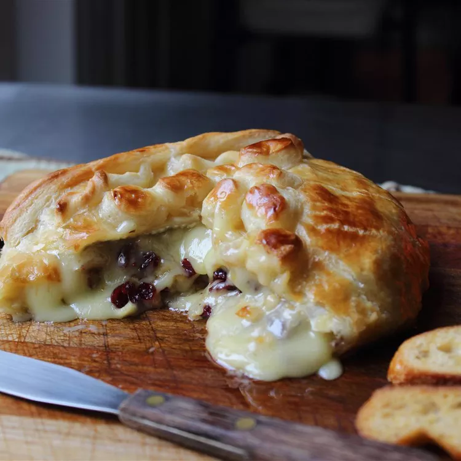

Baked Stuffed Brie with Cranberries & Walnuts

A Pantry-Friendly Dinner Ready in Less Than an Hour
One of the most common mistakes people make when serving cheese
is not letting it come to room temperature first, so that all the
flavors can be fully realized. This beautiful baked stuffed brie
takes that principle to the next level.
Ingredients
- 1 small wheel of brie (about 6 to 8 inches), chilled
- 1/4 cup dried Cranberries
- 1/4 cup chopped walnuts
- 1 sheet frozen puff pastry, thawed, plus extra for (optional) design
- 1 egg,beaten with
- 1 teaspoon water